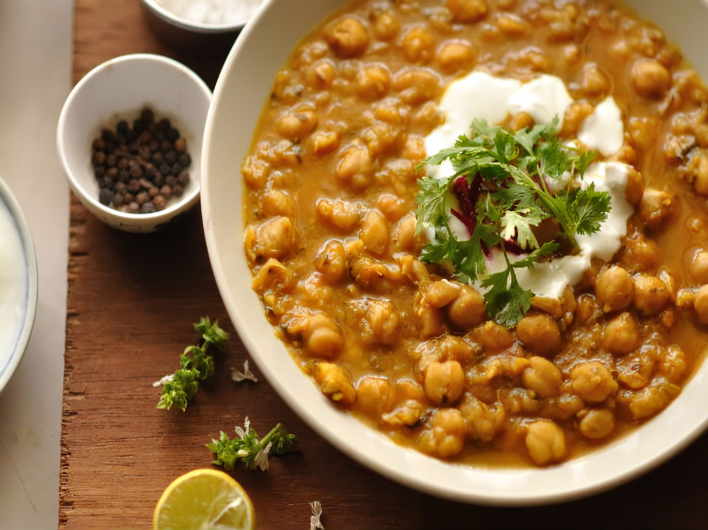
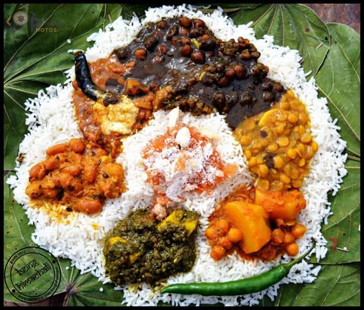
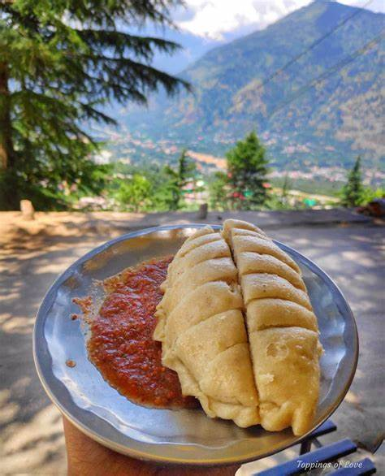
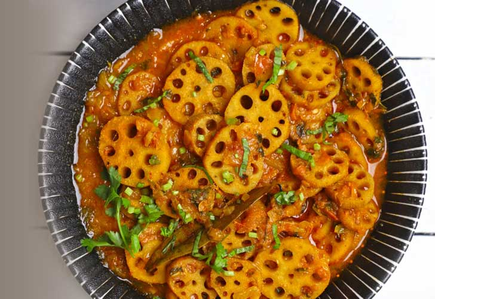
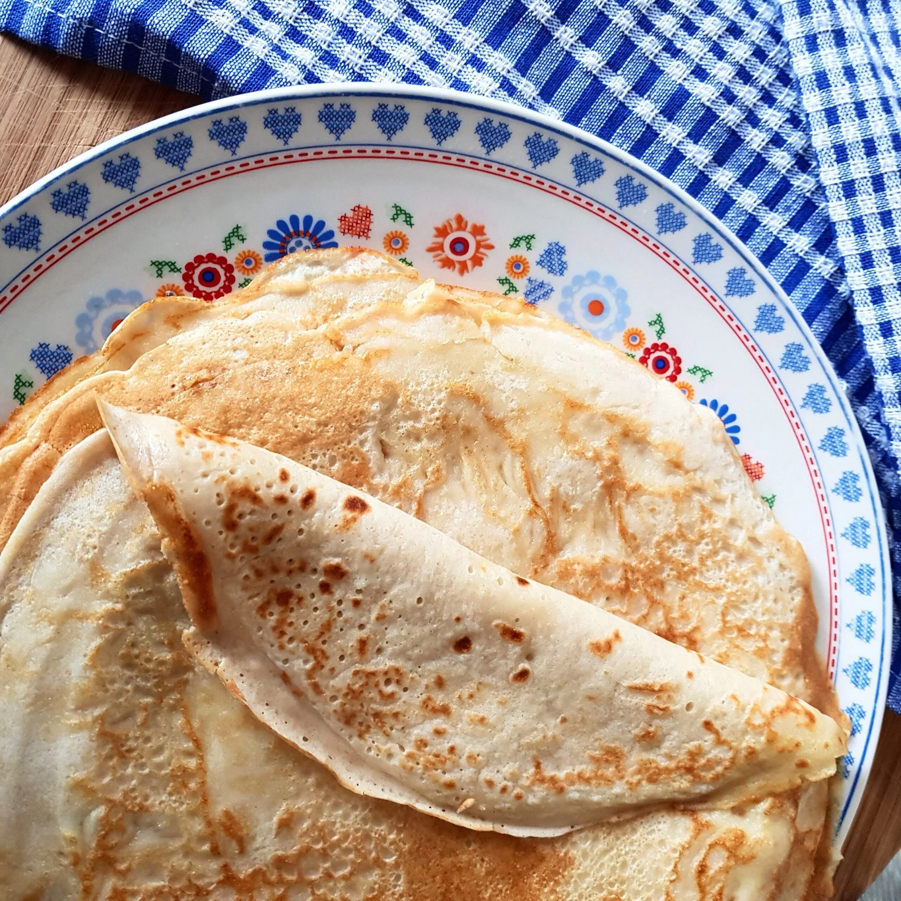
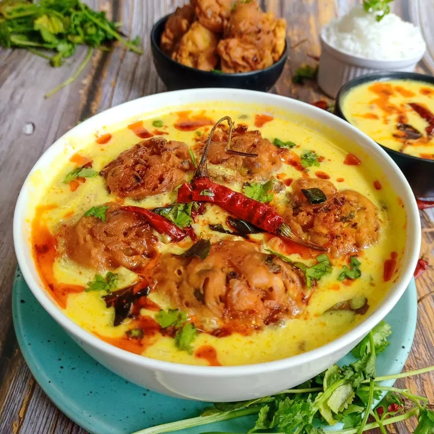

Madra
A chickpea curry rich in yogurt and spices, often served during traditional festivals.
Order Madra on Zomato

Dham
A celebratory meal with rice, dal, rajma, and sweetened curd, served on leaf plates.
Order Dham on Zomato

Siddu
Steamed bread stuffed with a savory filling, usually enjoyed with ghee and dal.
Order Siddu on Zomato

Bhey
A crunchy stir-fried dish made with lotus stem, seasoned with spices and herbs.
Order Bhey on Zomato


Kullu Trout
Fresh trout marinated with spices and shallow-fried, a specialty of Kullu Valley.
Order Kullu Trout on Zomato


Aktori
A festive cake-like dish made from buckwheat flour, popular in Lahaul-Spiti.
Order Aktori on Zomato

Kadi
A tangy yogurt-based curry with gram flour dumplings, served with rice.
Order Kadi on Zomato